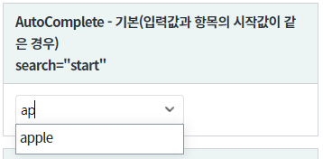
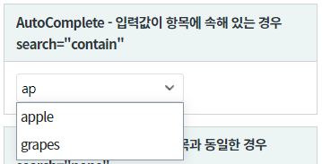
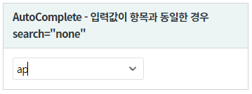
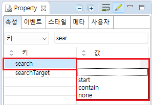

[AutoComplete] 검색어의 일치 조건 지정하기
1개요
사용자가 입력한 검색어의 검색 기준을 설정하는 기능 중 하나인 search 속성 예제입니다.
search 속성은 검색어의 검색 범위를 설정하는 기능합니다. 검색 범위는 아래와 같습니다.start : [default] 검색어와 항목의 시작과 같을 경우만 검색합니다.
contain : 검색어가 항목에 속해 있는 모든 경우 검색합니다.
none : 검색어가 항목과 완전히 같은 경우만 검색합니다.
2구현된 기능
검색어와 항목의 시작과 같을 경우만 검색하기
검색어가 항목에 속해 있는 모든 경우 검색하기
검색어가 항목과 완전히 같은 경우만 검색하기
3예제 테스트 방법
유형별로 검색어를 "ap"를 입력하여 출력된 목록을 비교합니다.
그림 1.브라우저(Chrome) 실행 예시 - 검색어와 항목의 시작과 같은 경우

그림 2.브라우저(Chrome) 실행 예시 - 검색어가 항목에 속해있는 경우

그림 3.브라우저(Chrome) 실행 예시 - 검색어가 항목와 일치할 경우

4구현 예시
- 컴포넌트의 search 속성을 "start" 또는 "contain" 또는 "none"으로 설정합니다. 속성을 적용하지 않은 경우 기본값은 "start"로 설정됩니다.
아래는 설정별 동작 방식입니다.
"start" (기본 값): 입력값과 항목의 시작과 같을 경우만 검색.
"contain" : 입력값이 항목에 속해 있는 모든 경우 검색.
"none" : 입력값이 항목과 완전히 같은 경우만 검색.
이 기능은 속성 interactionMode가 "false"로 설정된 경우만 동작합니다.
그림 4.웹스퀘어5 SP5 스튜디오의 Property View(속성창) 예시

<!-- autoComplete의 소스 본문 예시 - 입력값과 항목의 시작과 같을 경우만 검색 --> <w2:autoComplete search="start"> <!-- 중략 --> </w2:autoComplete> <!-- autoComplete의 소스 본문 예시 - 입력값이 항목에 속해 있는 모든 경우 검색 --> <w2:autoComplete search="contain"> <!-- 중략 --> </w2:autoComplete> <!-- autoComplete의 소스 본문 예시 - 입력값이 항목과 완전히 같은 경우만 검색 --> <w2:autoComplete search="none"> <!-- 중략 --> </w2:autoComplete>
5주요 API
search
6참고 문서
[웹스퀘어5 SP5 개발 가이드] AutoComplete
링크 : https://docs1.inswave.com/sp5_user_guide/8df43d1f59fab704#135c147277dd42f3
[웹스퀘어5 SP5 개발 가이드] AutoComplete 검색
링크 : https://docs1.inswave.com/sp5_user_guide/8df43d1f59fab704#830f2f7e76fcfba6
7참고 동영상
AutoComplete 검색
링크 : https://youtu.be/C1t_972BIrU